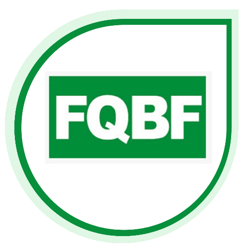
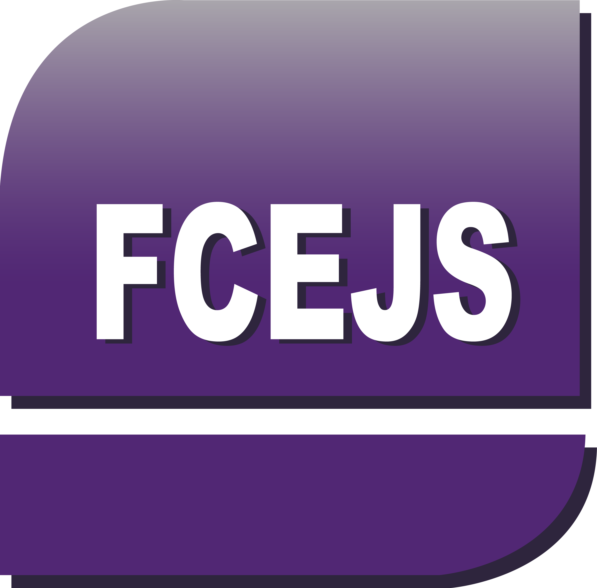
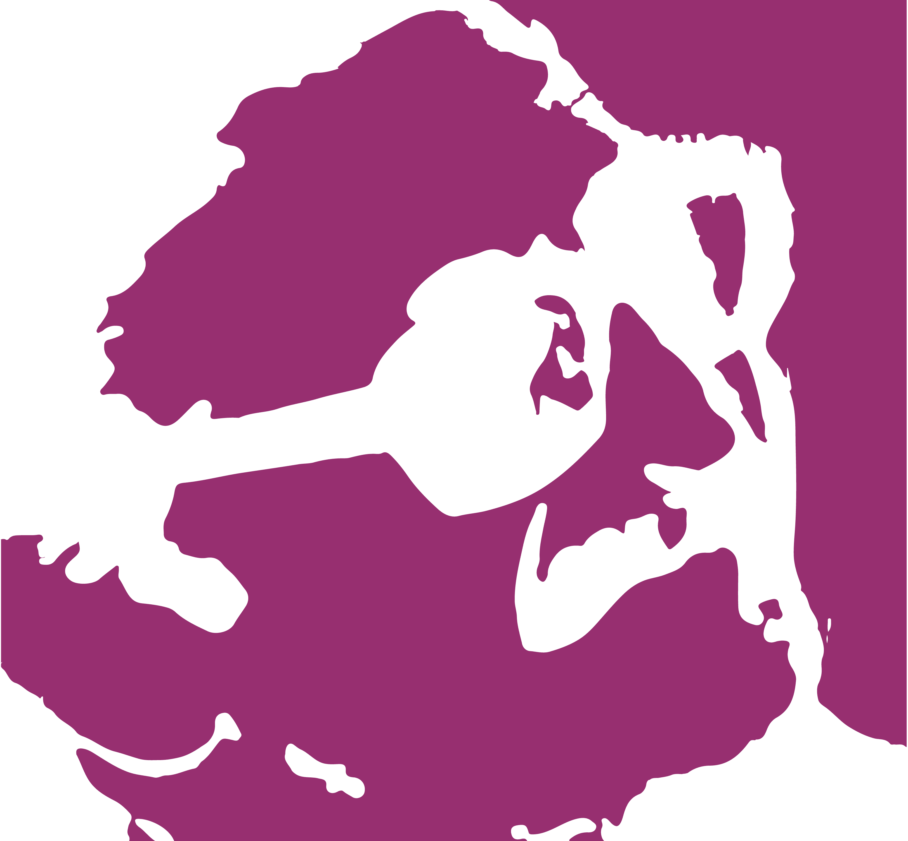

— resultados
—
Carreras
9
Facultades
3
Sedes
No se encontraron carreras
Probá con otros filtros o términos de búsqueda
Encontrá tu vocación entre más de 80 carreras de pregrado, grado y posgrado en todas las sedes de la UNSL.
— resultados
—
Carreras
9
Facultades
3
Sedes
No se encontraron carreras
Probá con otros filtros o términos de búsqueda
Si todavía no te decidiste, te ayudamos a encontrar tu perfil.
El programa de Orientación Vocacional Ocupacional (OVO) está a tu disposición para acompañarte en esta etapa con talleres, entrevistas y herramientas de autoconocimiento.
Ingresá al programa OVOEstructura académica
La Universidad Nacional de San Luis está organizada en nueve unidades académicas distribuidas en sus tres sedes: San Luis, Villa Mercedes y Merlo.

FQFQBYF
San Luis
FCFMYN
San Luis
FICA
Villa Mercedes

FCEJSFCEJS
San Luis
FCH
San Luis
FAPSI
San Luis
FCS
San Luis · Villa Mercedes
FTU
Merlo

IPIPAU
San Luis